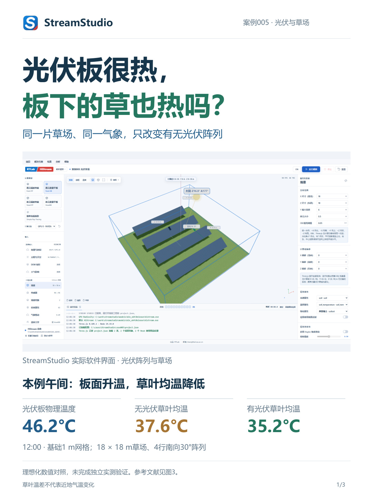

光伏板很热，板下的草也热吗？
小红书版 · 3张竖图 · 1080 × 1440
点击图片打开原图，再长按保存到手机相册。按图1—图3顺序上传。
图1 · 光伏与草场
打开 / 保存原图

图2 · 草叶温度对照
打开 / 保存原图
图3 · 热辐射方向性与参考文献
打开 / 保存原图
配套文案
文案含Fan的JAG、Zhong的RSE两篇模型论文。
小红书版 · 3张竖图 · 1080 × 1440
点击图片打开原图，再长按保存到手机相册。按图1—图3顺序上传。

文案含Fan的JAG、Zhong的RSE两篇模型论文。